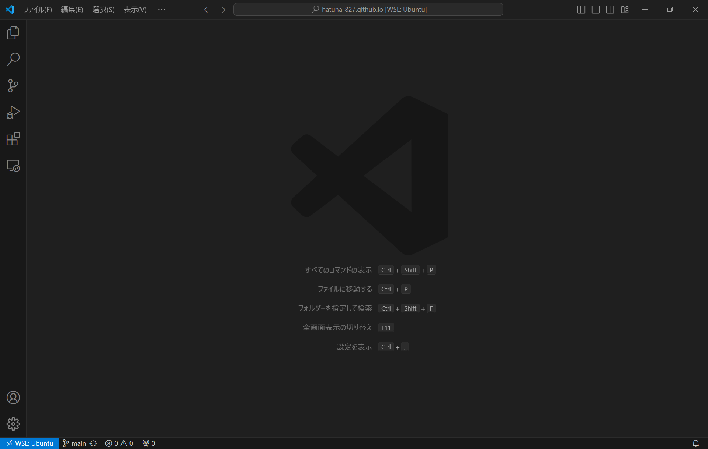
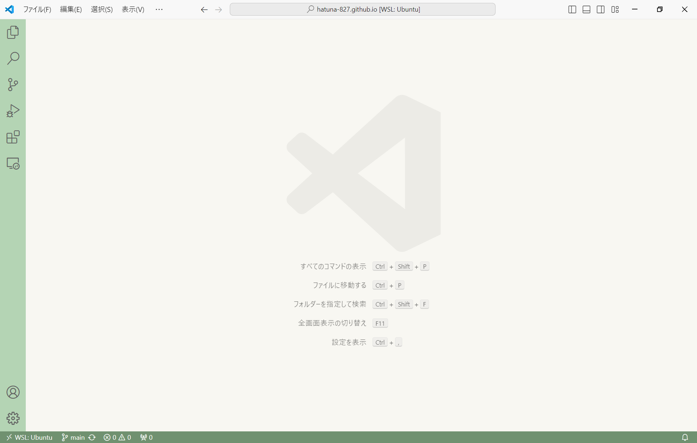

VScodeのデザインを変更しよう！
はじめに、
これは普通のVScodeですよね。
これだと何だか物足りない、、
ということで今回はVScodeのデザインをカスタマイズしたいと思います。
"setting"を開こう。
デザインを変更すためにまず、settingを開きます。
Ctrl + Shift + P を押し、settingと入力します。
基本設定:ユーザー設定を開く(JSON)をクリックし、出てきた画面に記述していきます。
デザインをしよう。
今回は、私の好きな緑をメインに作りました。
{
"workbench.colorTheme": "Default Light Modern",
"editor.fontSize": 13,
"workbench.colorCustomizations": {
//アクティビティバー
"activityBar.background": "#b4d4b4", //アクティビティバーの背景
"activityBar.activeBorder": "#537953", //アクティブなアクティビティバーの線
"activityBar.border": "#f8f7f2", //アクティビティバーのボーダー
"activityBar.activeBackground": "#a2c7a2", //アクティブなアクティブバーの背景
"activityBar.foreground": "#000000", //アクティビティバーの文字
"activityBarBadge.background": "#f8f7f2", //アクティビティバーのバッチの背景
"activityBarBadge.foreground": "#000000", //アクティビティバーのバッチの文字
//ボタン
"button.foreground": "#ffffff", //文字
"button.hoverBackground": "#709170", //ホバー
"button.background": "#7b9c7b", //背景
//エディター
"editor.background": "#f8f7f2", //エディター背景
"editor.foreground": "#000000", //エディター文字
"editor.selectionBackground": "#afd8af", //選択背景
"editor.lineHighlightBackground": "#e2f0e2", //選択行
"editorCursor.foreground": "#000000", //カーソル
"editorLineNumber.foreground": "#709170", //行数
"editorLineNumber.activeForeground": "#398439", //選択行数
"editorBracketMatch.background": "#b4d4b4", //括弧の組み合わせ
"editorBracketMatch.border": "#b4d4b4", //括弧の組み合わせのボックス
"editorError.foreground": "#e0587f", //エラー下線
"editorWarning.foreground": "#e0587f", //警告下線
//フォーカス
"focusBorder": "#709170",
//メニューバー
"menu.selectionBackground": "#a2c7a2", //選択背景
"menu.selectionForeground": "#000000", //選択文字
"menu.separatorBackground": "#AAAAAA", //仕切り
"menu.background": "#e2f0e2", //背景
"menu.foreground": "#000000", //文字
//パネル
"panel.background": "#f8f7f2",
"panelTitle.activeBorder": "#709170",
//ステータスバー
"statusBar.noFolderBackground": "#709170",
"statusBar.background": "#709170", //下のステータスバー
"statusBar.foreground": "#ffffff", //下のステータスバーの文字
"statusBarItem.remoteBackground": "#709170", //左下のリモート背景
"statusBarItem.remoteForeground": "#ffffff", //左下のリモート文字
"statusBar.border": "#709170", //下のリモートとエディターの間
//サイドバー
"sideBarTitle.background": "#b4d4b4",
"sideBarSectionHeader.background": "#b4d4b4",
"sideBar.background": "#f8f7f2", //フォルダの背景
"sideBar.foreground": "#000000", //フォルダの文字
//スクロールバー
"scrollbarSlider.activeBackground": "#99c299", //スクロールバー アクティブ
"scrollbarSlider.hoverBackground": "#99c299", //スクロールバー ホバー
"scrollbarSlider.background": "#afddaf", //スクロールバー
//タブ
"tab.activeBackground": "#cae8ca", //開いている 背景
"tab.activeForeground": "#000000", //開いている 文字
"tab.activeBorderTop": "#cae8ca", //開いている ボーダー
"tab.inactiveBackground": "#d6ebd6", //開いていない 背景
"tab.inactiveForeground": "#707070", //開いていない 文字
"tab.hoverBackground": "#cae8ca",
"tab.border": "#f8f7f2",
"tab.unfocusedActiveBackground": "#d6ebd6",
"tab.unfocusedInactiveBackground": "#e5f5e5",
"tab.unfocusedHoverBackground": "#d6ebd6",
//ターミナル
"terminal.foreground": "#000000",
"terminalCommandDecoration.defaultBackground": "#99c299",
"terminalCommandDecoration.errorBackground": "#ff4d4d",
"terminalCommandDecoration.successBackground": "#709170",
"terminalCommandGuide.foreground": "#cde6cd",
"terminalCursor.foreground": "#709170",
"progressBar.background": "#709170",
//タイトルバー
"titleBar.activeBackground": "#f8f7f2",
},
"workbench.startupEditor": "none",
"editor.tokenColorCustomizations": {
"comments": "#008000",
"strings": "#cf0030",
"numbers": "#763166",
"keywords": "#133463",
"functions": "#c39043",
"types": "#0083c6",
"variables": "#2980af",
}
}
長いですね、
これを入力して、保存すると画面が次のように変わります。
カラーコードを変えることで、自由にデザインできます。
ぜひ、やってみてください。